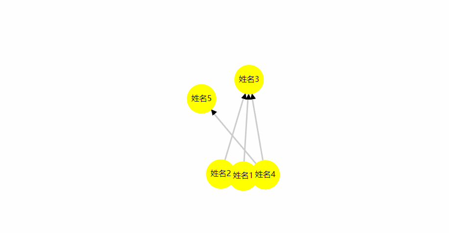

<!DOCTYPE html>
<html lang="en">
<head>
<meta charset="UTF-8">
<title>Title</title>
<script src="https://d3js.org/d3.v4.min.js"></script>
</head>
<body>
<svg width="960" height="500"></svg>
</body>
<script type="text/javascript">
var nodes = [
{ name: "姓名1"},
{ name: "姓名2"},
{ name: "姓名3"},
{ name: "姓名4"},
{ name: "姓名5"},
];
var links = [ { source : 0 , target: 2 } , { source : 1 , target: 2 } ,
{ source : 3 , target: 2 } , { source : 3 , target: 4 } ,
];
var width = 1024;
var height = 738;
var svg = d3.select("svg")
.attr("width",width)
.attr("height",height);
var circle_radius = 30;
// 通过布局来转换数据，然后进行绘制
var simulation = d3.forceSimulation(nodes)
.force("link", d3.forceLink(links).distance(200))
.force("charge",d3.forceManyBody().strength(-100))
.force("center",d3.forceCenter(width/2, height/2));
var color = d3.scaleOrdinal(d3.schemeCategory20);
// 绘制线
var svg_links = svg.selectAll("path")
.data(links)
.enter()
.append("path")
.style("stroke","#ccc")
.style("stroke-width",3);
//节点对象
var svg_nodes = svg.selectAll("circle")
.data(nodes)
.enter()
.append("circle")
.attr("r",circle_radius)
.attr("fill","yellow")
.call(d3.drag()
.on("start", dragstarted)
.on("drag", dragged)
.on("end", dragended));
function dragstarted(d) {
if (!d3.event.active)
simulation.alphaTarget(0.002).restart();
d.fx = d.x;
d.fy = d.y;
}
function dragged(d) {
d.fx = d3.event.x;
d.fy = d3.event.y;
}
function dragended(d) {
if (!d3.event.active)
simulation.alphaTarget(0);
}
//节点描述
var svg_text = svg.selectAll("text")
.data(nodes)
.enter()
.append("text")
.style("fill","#000")
.attr("dominant-baseline","middle")
.attr("text-anchor", "middle")//在圆圈中加上数据
.text(function(d){return d.name;});
//箭头
var marker=
svg.append("marker")
.attr("id", "resolved")
.attr("markerUnits","userSpaceOnUse")
.attr("viewBox", "0 -5 10 10")//坐标系的区域
.attr("refX",34)//箭头坐标
.attr("refY", -1)
.attr("markerWidth", 12)//标识的大小
.attr("markerHeight", 12)
.attr("orient", "auto")//绘制方向，可设定为：auto（自动确认方向）和 角度值
.attr("stroke-width",2)//箭头宽度
.append("path")
.attr("d", "M0,-5L10,0L0,5")//箭头的路径
.attr('fill','#000000');//箭头颜色
function draw(){
svg_nodes
.attr("cx",function(d){return d.x;})
.attr("cy",function(d){return d.y;})
.attr("role",function (d) {
return d.role;
});
svg_text
.attr("x", function(d){ return d.x; })
.attr("y", function(d){ return d.y; });
svg_links
.attr("d",function(d){
return 'M '+d.source.x+' '+d.source.y+' L '+ d.target.x +' '+d.target.y
})
.attr("marker-end", "url(#resolved)");
}
simulation.on("tick",draw);
svg.call(d3.zoom().scaleExtent([0.05, 8]).on('zoom', () => {
var transform = d3.event.transform;
svg_nodes.attr('transform', transform);
svg_links.attr("transform",transform);
svg_text.attr("transform",transform);
})).on('dblclick.zoom', null);
var e = { name: "姓名6"};
var f = {source : 5 , target: 2};
d3.timeout(function(){
nodes.push(e);
links.push(f);
update()
}, 4000);
function update() {
svg_nodes = svg_nodes
.data(nodes, (d) => d.name)
.enter()
.append("circle")
.attr("r",circle_radius)
.attr("fill","yellow")
.merge(svg_nodes).call(d3.drag()
.on("start", dragstarted)
.on("drag", dragged)
.on("end", dragended));
svg_text = svg_text.data(nodes)
.enter()
.append("text")
.style("fill","#000")
.attr("dominant-baseline","middle")
.attr("text-anchor", "middle")
.text(function(d){return d.name;})
.merge(svg_text);
svg_links = svg_links.data(links, (d) => { return d.source.name + "-" + d.target.name; })
.enter()
.append("path")
.style("stroke","#ccc")
.style("stroke-width",3)
.merge(svg_links);
simulation.nodes(nodes);
simulation.force("link").links(links);
simulation.alpha(1).restart();
}
</script>
</html>